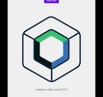
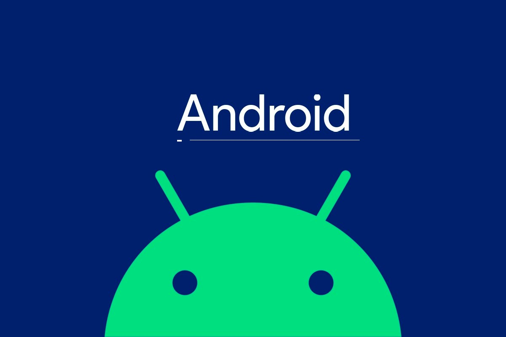

Expertise Técnica
Habilidades Clave
Tecnologías y patrones que impulsan soluciones sólidas, escalables y alineadas con las necesidades de PYMES.

Compose Multiplataforma (CMP)
Especialista certificado en construir UI y lógica una sola vez, entregando experiencia nativa en Android, iOS, Web y Desktop.

Android Nativo
6+ años desarrollando Android nativo con arquitecturas escalables; Jetpack Compose forma parte del toolkit cuando aplica.
Fullstack Kotlin Moderno
Soluciones Fullstack con backend Kotlin-Ktor e UI unificada en Compose Multiplatform, listas para escalar en proyectos reales.